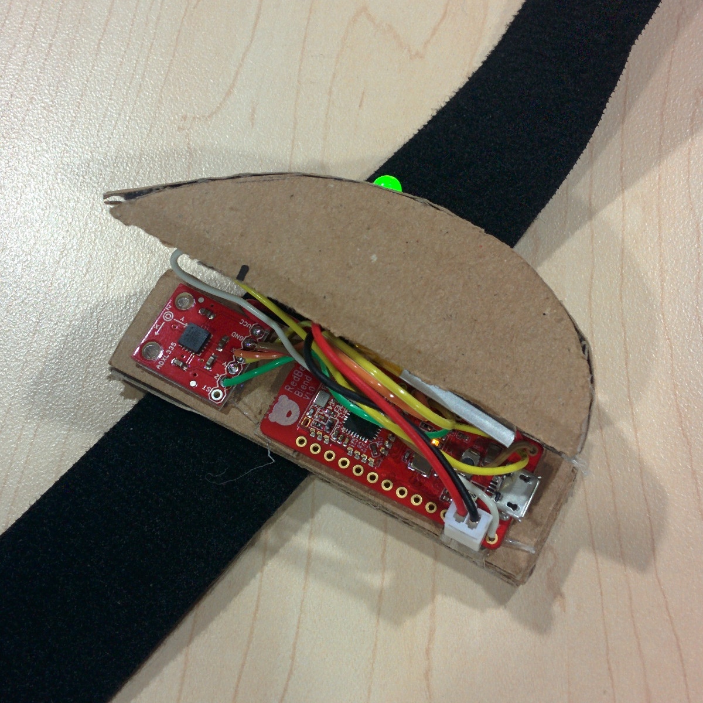
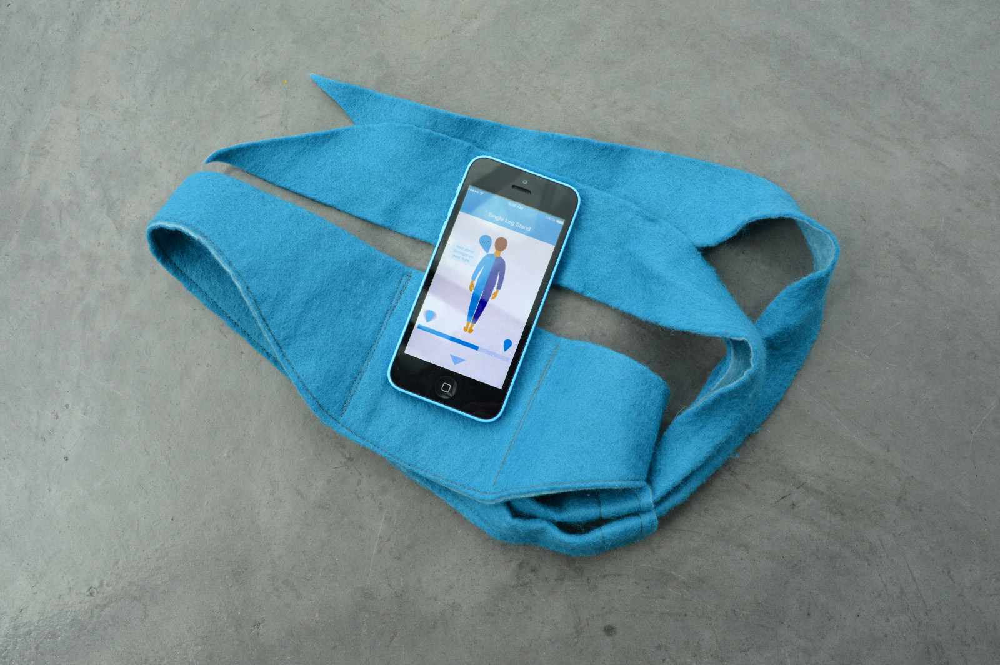

Helping identify and develop a new product category for Stannah Stairlifts
Partner
Stannah Stairlifts
Locations
London
Challenge
Help the Stannah team identify an new product/service which helps older people stay active at home
Outcome
World’s first wearable and app for measuring body balance
Background
Stannah Stairlifts are a 150 year manufacturer of lifts and stairlifts based in Andover, Hampshire. They have produced more than 500,000 stairlifts for older people who have trouble with going up and down stairs because of arthritis, hip replacements, multiple sclerosis or simply from old age. Stairlifts can enable people to have continues access to their whole house.
Designing with Extreme Users and Data
The Stannah design team were looking to deeply understand older people’s attitudes to activity and well-being and use these to develop novel design concepts. The first stairlift equipped home we visited belonged to a retired couple in their late 80’s. There we spotted several pairs of shoes with the left shoe scuffed, and the right shoe near spotless. Clare told us about her repeat falls and reluctance to buy a stairlift since she felt it would limit her mobility even further and akin to giving up!
A deeper look into the area of falls & ageing lead to the insight that one-third of people aged 65 and over fall each year, and those who fall once, are two to three times more likely to fall again. Stairlift purchases are often delayed by people since they equate having a stairlift to a steep decline in mobility. We conducted interviews with UK’s leading falls experts, people who attend stable and steady classes, physiotherapists and stairlift users. Visiting homes and attending classes gave us an insights into the tactics adopted by people recovery after a fall. We developed four opportunity areas for Stannah to consider including active re-enablement devices, lighting solutions for the home and body balance products. The Stannah team were interested in exploring products which positively impacted body balance.
We created a set of “provocations” and recruited participants who had impaired body balance due to diverse reasons and were women over the age of 60. Our cohort were all actively trying to overcome their balance problems and leading full and busy lives. One was an ex ballet dancer who had both her hips replaced, another an avid garden in wales with multiple co-morbidities and a recent faller with a fear of busy roads living in Central London.
Our first provocation was a postural sway app which could be strapped onto somebody’s leg to measure their static balance. We also created prompt cards containing everyday scenarios which challenge the bodies balance and role-played unloading washing machines, reaching up to high shelves, navigating a busy road with our participants to get a sense of their dynamic balance. A Fitbit measured our participants activity levels and accompanying energy diaries gave us insight into their thoughts through the day.
Testing the first provocation
Our big insight from this ethnographic study was that when cardiovascular health declines we feel the effects, panting while climbing stairs, red sweaty face after a quick walk to catch a bus but balance health declines in the background without many signals. Rich vocabularies and common tools exist to measure, verbalise and compare changes in cardiovascular health (weighing scales, BMI and kgs), However, their are neither tools nor language to communicate changes over time in balance health, somebody might say they are wobbly or weak kneed or clumsy but how does one know that they are improving?
We designed a better version of our first provocation into an app that use accelerometer readings to give feedback to a person about their static balance. We tested this app with 20 people over 10 days to roughly understand whether a phone accelerometer could detect intra and inter personal differences in balance health. This was successful and followed by the design and development of the first iteration of the balance iPhone app which contained 3 exercises semi-tandem, tandem and single leg stands. Feedback from a ten day user testing with 9 participants encouraged us to explore a wearable device and create a better, more engaging programme with more exercises.
First iteration of the mobile app
We developed a repository of 15 static and dynamic balance exercises and a “programmed random walk” exercise selector which would dial up or dial down the difficulty of the next exercise based on how well the person was performing. These exercises would be displayed on the balance app which could be paired with the balance wearable device a simple clip which can be attached to a belt or clothing above the navel. Now, the participant could have a screen in front of them and be hands-free!
Wearable Prototype
We believe that this wearable and app can help the 250,000 people in the UK who are hospitalised due to a fall every year to recover their balance health while also enabling people with stairlifts to exercise and maintain their sense of wellbeing and mobility.
As we age our risk of tripping and falling increases, this is often due to poor balance. Stannah have worked with industry experts and older people to create the Balance app. Using structured exercises that target and improve core stability, this excellent new product can be utilised as part of a prevention programme of therapeutic intervention, reducing risk and maintaining clients independence!